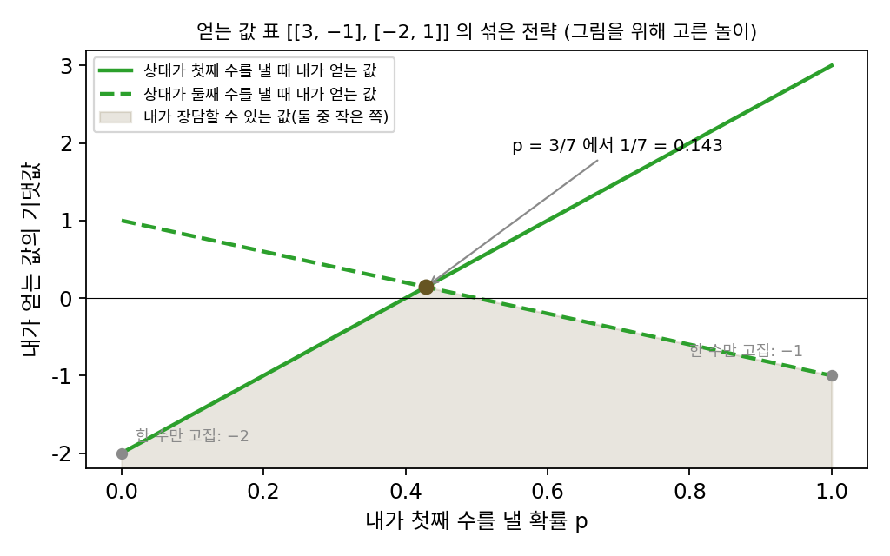
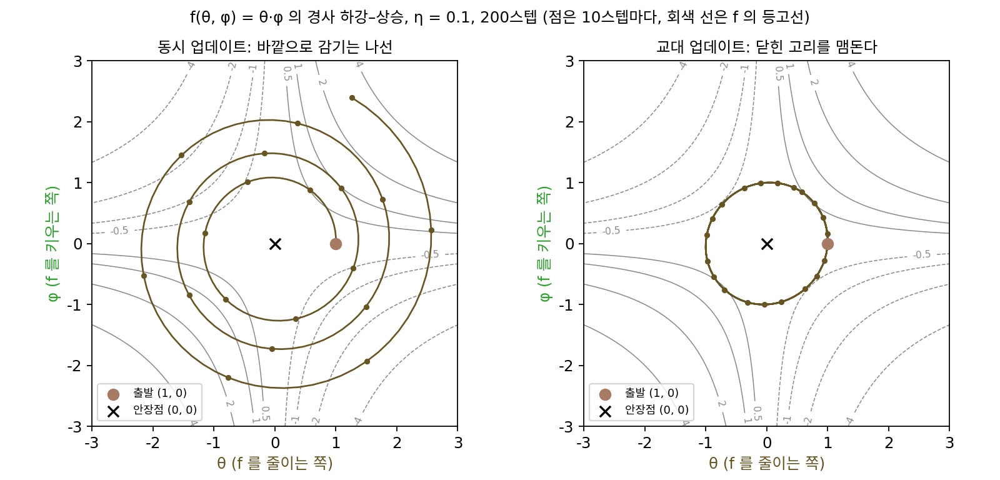

WGAN: 최소최대와 1-립시츠 판별기
이 장의 물음
2014년부터 2020년 무렵까지 「인공지능이 그린 얼굴」로 기사에 실린 사진은 대개 신경망 두 개를 맞붙여 학습한 모델이 만든 것이었다. 하나는 노이즈를 받아 그림을 만들고, 다른 하나는 그림을 보고 진짜 사진인지 만든 그림인지 가려낸다. 그림을 만드는 신경망은 가려내는 신경망을 속이려 하고, 가려내는 신경망은 속지 않으려 한다.
이런 모델을 직접 학습시켜 본 사람들은 비슷한 일을 겪었다고 말한다. 지금까지 이 책에서 본 학습에는 「손실이 줄고 있는가」라는 믿을 만한 신호가 있었다. 그런데 두 신경망을 맞붙이면 한 신경망의 손실이 줄 때 다른 신경망의 손실이 늘며 둘 다 오르내릴 뿐, 손실 곡선만 봐서는 그림이 좋아지고 있는지 알 수 없다. 어떤 날은 학습이 순조로운 듯하다가 그림을 만드는 신경망이 갑자기 거의 같은 얼굴 몇 장만 되풀이해 내놓는다. 어떤 날은 가려내는 신경망이 너무 잘해서 만드는 신경망이 아무것도 배우지 못한다.
이 장은 다음 물음에 차례로 답한다.
- 파라미터를 두 묶음으로 나눠, 한 묶음은 값을 줄이고 다른 묶음은 같은 값을 키우는 문제를 그래디언트로 풀면, 둘은 서로 만족하는 자리로 갈까?
- 가려내는 신경망이 잘할수록 만드는 신경망이 오히려 배울 것이 없어지는 까닭은 무엇일까?
- 만든 그림들이 진짜 사진들에서 「얼마나 먼지」를 재려면 가려내는 신경망은 어떤 함수여야 할까?
- 가려내는 신경망이 「얼마나 먼지」를 재려고 지켜야 할 조건을 수십만 개의 가중치를 가진 신경망에 어떻게 지킬까?
최소최대 최적화: 한 묶음은 내리고 다른 묶음은 올린다
지금까지는 손실 하나를 정해 두고 그것을 줄이는 파라미터를 찾았다. 파라미터가 여럿이어도 모두 같은 목표, 곧 같은 손실을 줄이는 쪽으로 움직였다. 그런데 서로 반대 목표를 가진 두 묶음의 파라미터가 같은 값을 두고 다투는 문제도 있다. 두 사람이 하는 놀이가 그렇다. 한 사람이 얻는 만큼 다른 사람이 잃는다면, 한 사람은 판의 값을 키우려 하고 상대는 같은 값을 줄이려 한다. 그렇다면 둘 다 자기 목표대로 경사하강을 하면 될까? 각자 그래디언트를 따라 한 스텝씩 가다 보면, 둘 다 더는 움직일 까닭이 없는 자리에 함께 닿을까?
역사: 보렐의 의심과 폰 노이만의 증명

이런 놀이를 수학으로 처음 따진 사람 가운데 하나가 프랑스의 수학자 에밀 보렐(Émile Borel)이다. 그는 1921년부터 1927년 사이에 낸 짧은 글 여러 편에서, 한 사람이 얻는 만큼 다른 사람이 잃는 두 사람의 놀이를 다뤘다. 그가 본 어려움은 이렇다. 수를 하나로 정해 두면 상대가 그것을 읽고 맞받아친다. 그래서 수를 정해진 확률로 섞어 내는 「섞은 전략」을 생각했다. 그러면 「내가 장담할 수 있는 가장 좋은 값」과 「상대가 막을 수 있는 가장 나쁜 값」이 같아질까? 보렐은 고를 수가 셋이나 다섯인 작은 놀이에서는 그렇다는 것을 보였지만, 일반적인 놀이에서도 그런지는 의심했고 뒤에는 열린 물음으로 남겼다고 전해진다.
1928년, 베를린 대학의 젊은 강사였던 존 폰 노이만(John von Neumann)이 『수학 연보(Mathematische Annalen)』 100권에 「사교 놀이의 이론에 대하여(Zur Theorie der Gesellschaftsspiele)」를 실었다. 그는 고를 수가 유한한 두 사람의 놀이라면, 섞은 전략을 허락할 때 언제나 두 값이 같다는 것을 증명했다. 위 그림에서 칠한 영역의 꼭대기 1/7이 두 값이 같아진 값이다. 폰 노이만은 뒤에 이 정리가 없으면 놀이의 이론이 있을 수 없고, 이것이 증명되기 전까지는 발표할 만한 것이 없다고 생각했다는 말을 남겼다고 전해진다. 이 정리는 1944년 오스카어 모르겐슈테른(Oskar Morgenstern)과 함께 낸 책 『놀이의 이론과 경제 행동』의 뼈대가 되었다. 그런데 이 정리는 두 값이 만나는 점이 「있다」는 것까지만 말한다. 두 선수가 각자 조금씩 전략을 고쳐 가며 그 점에 「닿을 수 있는지」는 다른 물음이다.
θ·φ 놀이
닿을 수 있는지를 보려면, 답을 미리 아는 가장 작은 놀이에서 시작하는 것이 좋다. 함수 f(θ, φ) = θ·φ를 놓고, θ(세타)는 이 값을 줄이고 싶고 φ(피)는 키우고 싶다고 하자. θ를 파라미터 색으로, φ를 다른 색으로 칠한 것은 뒤에서 θ가 그림을 만드는 신경망의 파라미터를, φ가 가려내는 신경망의 파라미터를 맡기 때문이다. 곱 하나를 고른 까닭은, 두 선수의 이해가 정면으로 부딪히는 가장 단순한 꼴이기 때문이다. θ가 0이 아니면 φ는 θ와 같은 부호로 끝없이 커져 값을 키울 수 있고, φ가 0이 아니면 θ도 반대 부호로 가서 값을 끝없이 줄일 수 있다. 그래서 둘 다 상대에게 빈틈을 주지 않는 자리는 (0, 0) 하나뿐이고, 거기서 값은 0이다. θ 방향으로는 바닥이고 φ 방향으로는 꼭대기인 안장점(말안장처럼 한 방향으로는 오목하고 다른 방향으로는 볼록한 자리)이다.
둘이 각자 자기 목표대로 한 스텝씩 가 보자. θ에 대한 그래디언트는 ∂f/∂θ = φ이니 θ는 θ − ηφ로 내려가고, φ에 대한 그래디언트는 ∂f/∂φ = θ이니 φ는 φ + ηθ로 올라간다. 두 스텝을 같은 순간의 값으로 함께 계산하고, 학습률 η = 0.1로 (1, 0)에서 출발한다.
| 스텝 k | θ | φ | 안장점까지 거리 |
|---|---|---|---|
| 0 | 1.0000 | 0.0000 | 1.0000 |
| 1 | 1.0000 | 0.1000 | 1.0050 |
| 2 | 0.9900 | 0.2000 | 1.0100 |
| 3 | 0.9700 | 0.2990 | 1.0150 |
| 10 | 0.5708 | 0.8825 | 1.0510 |
| 50 | 0.3434 | −1.2356 | 1.2824 |
| 100 | −1.4088 | −0.8485 | 1.6446 |
| 200 | 1.2649 | 2.3908 | 2.7048 |
둘은 안장점으로 다가가지 않는다. 안장점 둘레를 돌면서 스텝마다 거리가 조금씩 늘어난다. 이렇게 파라미터 한 묶음(θ)은 값을 줄이고 다른 묶음(φ)은 같은 값을 키우는 문제를 최소최대 최적화 (한 묶음은 내리고 다른 묶음은 올리는 최적화 / minimax optimization)라 하고, 두 묶음이 동시에 경사를 따라 내려가고 올라가는 방법을 경사 하강–상승이라 부른다.
왜 돌기만 할까? θ·φ 놀이에서 한 스텝에 움직이는 방향은 (−φ, θ)다. 이 방향은 지금 자리 (θ, φ)와 늘 직각이다. 둘이 각자는 자기 목표대로 최선의 방향을 골랐는데, 합쳐 보면 안장점을 향하는 성분이 하나도 없이 원의 접선 방향으로만 미는 것이다. 접선을 따라 곧게 한 스텝 가면 원 밖으로 조금 벗어난다. 거리의 제곱이 스텝마다 1 + η²배, 곧 거리가 √1.01 = 1.004988배가 되고, 한 스텝에 5.711°씩 도니 63스텝쯤에 한 바퀴를 돌고 그사이 거리는 1.37배가 된다. 학습률을 줄여도 이 나선을 늦출 뿐 멈추지는 못한다. 경사하강에서는 학습률이 2/L(L은 움직인 거리에 비해 손실의 그래디언트가 바뀌는 비율의 상한)보다 작기만 하면 손실이 줄었는데, 여기서는 0보다 큰 어떤 학습률도 안장점에서 멀어지게 만든다.
φ가 θ의 새 값을 보고 움직이게 바꾸면 나선이 멈춘다. θ가 먼저 한 스텝 가고, 그 새 θ로 φ의 그래디언트를 재는 교대 업데이트다. 같은 학습률로 200스텝을 가도 안장점까지 거리는 0.976과 1.026 사이에 머문다. 계산해 보면 θ² + φ² − ηθφ라는 양이 스텝마다 1에서 바뀌지 않아서, 길이 원에 가까운 타원 위를 영원히 돈다. 나선은 멈췄지만 안장점에 닿지도 않는다.

돌기만 하는 것은 이 놀이에 안장점 쪽으로 끌어당기는 힘이 없기 때문이다. f에 ½θ² − ½φ²를 더해 θ 쪽은 그릇처럼, φ 쪽은 엎은 그릇처럼 휘게 하면, 같은 동시 업데이트가 스텝마다 거리를 0.9055배씩 줄여 100스텝 만에 안장점에 닿는다. 서로 맞물려 도는 성분 θ·φ가 클수록, 끌어당기는 성분이 약할수록 맴돌기가 문제가 된다.
ML에서: 두 신경망의 놀이
그림을 만드는 신경망과 가려내는 신경망을 맞붙이는 학습이 바로 이 꼴이다. 그림을 만드는 신경망의 파라미터가 θ 자리에서 「가려내는 신경망이 매긴 점수 차」를 줄이고, 가려내는 신경망의 파라미터가 φ 자리에서 같은 값을 키운다. 라르스 메셰더(Lars Mescheder)와 동료들은 2018년 국제 기계학습 학회(ICML)에 낸 「GAN 을 학습하는 방법 가운데 어느 것이 실제로 수렴하는가?」에서, 진짜 데이터가 한 점이고 만드는 쪽도 한 점만 내놓는 가장 작은 경우를 「디랙 GAN」이라 부르고, 동시 업데이트는 평형에서 멀어지고 교대 업데이트는 평형 둘레를 맴돈다는 것을 보였다. 그 놀이가 θ·φ 놀이와 어떻게 같은지는 아래 문제 3에서 직접 계산한다.
문제 1. 승부차기에서 어느 쪽으로 찰까
승부차기에서 키커는 왼쪽이나 오른쪽으로 차고, 골키퍼는 동시에 왼쪽이나 오른쪽으로 뛴다. 득점 확률이 아래와 같다고 하자(설명을 위해 지은 숫자다). 키커 왼쪽·골키퍼 왼쪽 0.58, 키커 왼쪽·골키퍼 오른쪽 0.95, 키커 오른쪽·골키퍼 왼쪽 0.93, 키커 오른쪽·골키퍼 오른쪽 0.70. (가) 키커가 늘 한쪽으로만 차면, 그것을 아는 골키퍼 앞에서 득점 확률은? (나) 두 사람이 매번 「상대가 지난번에 고른 쪽」에 가장 잘 맞서는 쪽으로 바꾼다. 처음에 둘 다 왼쪽을 골랐다면 그다음 일곱 번은 어떻게 되는가? (다) 키커가 왼쪽으로 찰 확률 p를 정해 섞는다면, 골키퍼가 무엇을 하든 장담할 수 있는 득점 확률이 가장 큰 p는?

0.95가 제일 크니까 왼쪽이죠. 골키퍼가 오른쪽으로만 뛰어 주면 거의 다 들어가요.

키커가 늘 왼쪽으로 찬다는 걸 골키퍼가 알면 어디로 뛸까요?

왼쪽이요. 그러면 0.58이에요. 늘 오른쪽으로 차도 골키퍼가 오른쪽으로 뛰어서 0.70이고요. 한쪽만 고집하면 상대가 읽어 버리네요.

(나)를 따라가 봤어. 왼/왼에서 키커는 골키퍼가 왼쪽에 있었으니 오른쪽(0.93)으로 바꾸고, 골키퍼는 키커가 왼쪽이었으니 그대로 왼쪽. 다음은 오/왼, 그다음 골키퍼가 오른쪽으로 바꿔서 오/오, 키커가 왼쪽으로 바꿔서 왼/오, 다시 왼/왼. 네 번마다 같은 자리로 돌아와. 서로 쫓기만 하고 멈추질 않아.

서로 쫓아다니는 대신, 골키퍼가 어느 쪽으로 뛰든 득점 확률이 같아지게 섞으면 어떨까요?

골키퍼가 왼쪽이면 0.58p + 0.93(1 − p), 오른쪽이면 0.95p + 0.70(1 − p)예요. 둘을 같게 놓으면 p = 0.23/0.60 = 0.3833이고, 그때 득점 확률은 0.7958이에요. 한쪽만 고집할 때의 0.58이나 0.70보다 커요. 골키퍼 쪽에서 같은 계산을 하면 왼쪽으로 뛸 확률 0.4167에서 막을 수 있는 가장 낮은 득점 확률도 0.7958이고요. 키커가 장담할 수 있는 값과 골키퍼가 막을 수 있는 값이 같아요.

시험에서 교수님이 매번 지난 시험에 안 나온 단원을 내고, 저는 지난 시험에 나온 단원만 공부했다가 계속 엇갈렸던 게 (나)였네요. 단원을 고루 섞어 공부했으면 어떤 문제가 나와도 비슷하게는 받았을 텐데요.
문제 2. 교대 업데이트는 학습률을 얼마까지 키울 수 있나
f(θ, φ) = θφ를 (1, 0)에서 교대 업데이트로 1000스텝 간다(θ ← θ − ηφ, 그다음 새 θ로 φ ← φ + ηθ). (가) η = 1.9, 2.0, 2.1에서 1000스텝 동안 안장점까지 거리의 최댓값은? (나) 한 스텝을 행렬로 적고, 경계가 어디인지 행렬로 설명하라. (다) 교대 업데이트는 어떤 학습률에서든 안장점에 닿는가? (풀어 본 뒤 위젯 1의 「문제 2」 단추로 확인해 보자.)
경사하강에서는 학습률이 2/L보다 작으면 줄어들었으니까, 교대 업데이트도 학습률만 작으면 결국 안장점으로 갈 것 같아. 큰 학습률에서만 터지고.
돌려 보니 1.9에서는 거리가 최대 4.472까지 갔다가 돌아오고, 2.0에서는 2828까지 계속 커져요. 2.1에서는 1000스텝 만에 6.7 × 10²⁷³이고요. 2 언저리가 경계 같아요.
한 스텝을 행렬로 써 보세요. 새 θ를 φ 식에 넣으면요?

θ′ = θ − ηφ, φ′ = φ + η(θ − ηφ)니까 행렬이 [[1, −η], [η, 1 − η²]]예요. 행렬식이 1 − η² + η² = 1이네요. 어떤 학습률이든 1이에요.
행렬식이 늘 1이면 두 고윳값의 곱이 늘 1이죠. 그럼 둘 다 크기가 1보다 작아질 수 있나요?

없어요. 하나가 1보다 작으면 다른 하나는 1보다 커야 해요. 대각합 2 − η²의 크기가 2보다 작으면 두 고윳값이 크기 1인 복소수 짝이라 그냥 돌고, η > 2에서 대각합이 −2보다 작아지면 실수 고윳값 하나가 1보다 커져서 터져요. η = 2에서는 고윳값이 −1로 겹쳐서 거리가 스텝 수에 비례해 자라고요. 그러니까 (다)의 답은 「아니요」예요. 교대 업데이트는 넓이를 지키는 변환이라 작은 학습률에서도 줄어들지 않고 맴돌기만 해요. 선형대수 시간에 행렬식이 넓이의 배율이라고 배운 게 여기서 「수렴 못 함」의 증명이 되네요.

교대로 바꾸면 고쳐지는 줄 알았는데, 터지는 걸 막아 준 것뿐이군요. 조별 과제에서 서로 상대 파트를 보고 내 걸 고치기를 번갈아 하면 싸움은 안 나는데 끝도 안 나는 거랑 비슷해요.
문제 3. 디랙 GAN
진짜 데이터는 0 한 점이고, 생성기는 θ 한 점을 내놓는다. 판별기는 D(x) = sigmoid(φx)로 「진짜일 확률」을 매긴다. 판별기는 log D(진짜) + log(1 − D(가짜)) = log ½ + log(1 − sigmoid(φθ))를 키우고, 생성기는 같은 값을 줄인다. (가) 평형 (θ, φ) = (0, 0) 근처에서 두 그래디언트를 어림하라. (나) (1, 1)에서 학습률 0.1로 동시 업데이트와 교대 업데이트를 3000스텝씩 하면 평형까지의 거리는? (다) 생성기가 이미 θ = 0에 있으면 판별기는 어디로 가야 하는가?
진짜가 0이고 생성기가 θ 하나뿐이니까 금방 θ = 0으로 가겠죠. 판별기가 「0이 진짜야」라고 알려 주잖아요.
돌려 보고 말해 볼까요?

동시 업데이트는 거리가 1.414에서 500스텝 뒤 2.179, 1000스텝 뒤 2.756, 3000스텝 뒤 3.489로 늘어요. 교대 업데이트는 1.4208, 1.4316, 1.4544로 거의 그대로 맴돌고요. 둘 다 0으로 안 가요.
(가)를 하면 보여. 생성기 그래디언트가 −φ·sigmoid(φθ), 판별기 그래디언트가 −θ·sigmoid(φθ)인데, 0 근처에서 sigmoid가 ½이니까 θ ← θ + (η/2)φ, φ ← φ − (η/2)θ예요. 부호만 다르고 학습률이 절반인 θ·φ 놀이야.

그래요. (다)도 생각해 봐요. θ = 0이면 가짜와 진짜가 같은 점이에요. 판별기에게 φ를 0으로 되돌릴 까닭이 있나요?
없어요. θ = 0이면 φ가 무엇이든 값이 log ½ + log ½로 같으니까 그래디언트가 0이에요. φ가 0이 아닌 채 남아 있으면 바로 다음 업데이트에서 θ를 다시 밀어내고요. 평형에서 「판별기가 아무 점수도 안 매기는 상태」로 돌아오게 끌어당기는 힘이 없어요. 위에서 ½θ² − ½φ²를 더하니까 수렴했던 것처럼, 끌어당기는 항이 있어야 하겠네요.
두 신경망이 서로 가르쳐 주니까 알아서 맞춰질 줄 알았는데, 맞붙인 것만으로는 θ·φ 놀이처럼 서로 쫓아다니기만 하네요. 시험 감독이 「부정행위 없음」을 확인한 뒤에도 계속 의심의 눈초리를 거두지 않으면 학생이 괜히 자리를 옮기는 것 같아요.